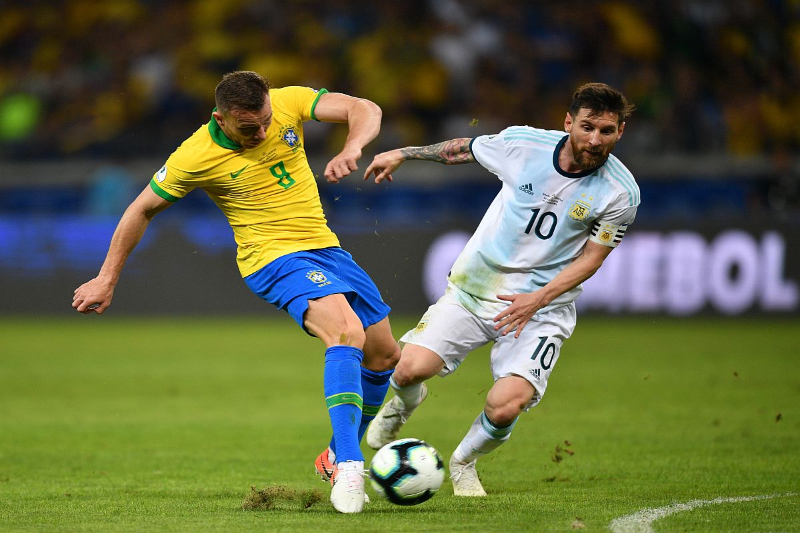

Lionel Messi said Sunday that he hoped Argentina's Copa America triumph would help provide strength to his fan in their battle to overcome the Covid-19 pandemic. The message, posted on social media, came less than a day after the Albiceleste beat Brazil 1-0 in the Copa America final at Rio de Janeiro's Maracana stadium, ending Argentina's 28-year wait for a major trophy.

"In Maracana and in the classic against Brazil ...It was an incredible Cup, we know that we can still improve many things, but the truth is that the kids left their souls and I cannot be more proud to be lucky enough to be captain of this spectacular group," Messi who was exemplary in his leadership throughout the tournament, wrote on Instagram.
Diego Maradona passed away at the age of 60 last year and Messi, who was coached by Maradona at the 2010 World Cup dedicated the win to the legendary former Argentine number 10. "I want to dedicate this success to my family who always gave me the strength to keep going, to my friends that I love so much, to all the people who bank us and especially to the 45 million Argentines who had such a bad time with this virus , especially those that touched them more closely. It goes for all of you. And of course, also for Diego who surely supported us from wherever he is."
"In order to continue celebrating we have to continue taking care of ourselves, let's not forget that there is still a long way to go to return to normality and take advantage of this happiness to gain a little strength to fight together to win against the virus. Thank you God for everything you gave me and thank you for having made me be Argentine," Messi wrote on Instagram.